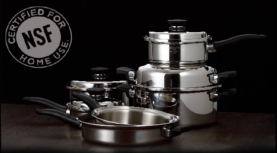

【原味複合金鍋 獲NSF安全認證】

嚴苛測試 真金不怕火煉
美國國家衛生基金會（NSF）是一獨立、客觀、非營利的測試與認證機構，除了眾所皆知的淨水器標準認證，亦針對各種家用產品包括鍋具、食器等，設定嚴格的安全規範。為食安把關，讓大家用得放心、吃得安心，Amway Queen原味複合金鍋以最高標準通過各項安全測試，獲得NSF安全認證。唯有高品質的原味複合金鍋才能不怕試煉，經得起嚴苛的安全考驗！
品質結合人體工學的時尚設計為廚房炊具賦予生活的溫度與美感慢燉快炒 內斂樸實的味覺記憶實現料理的效率 卻重溫了慢食的確幸

美國國家衛生基金會（NSF）是一獨立、客觀、非營利的測試與認證機構，除了眾所皆知的淨水器標準認證，亦針對各種家用產品包括鍋具、食器等，設定嚴格的安全規範。為食安把關，讓大家用得放心、吃得安心，Amway Queen原味複合金鍋以最高標準通過各項安全測試，獲得NSF安全認證。唯有高品質的原味複合金鍋才能不怕試煉，經得起嚴苛的安全考驗！